1. Awal Memulai |
| Saat pertama kali menjalankan aplikasi SIDAR, pada tampilan aplikasi akan muncul popup tampilan seperti dibawah. |
| 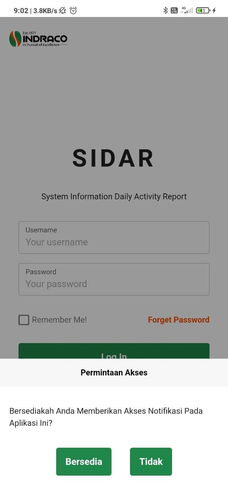 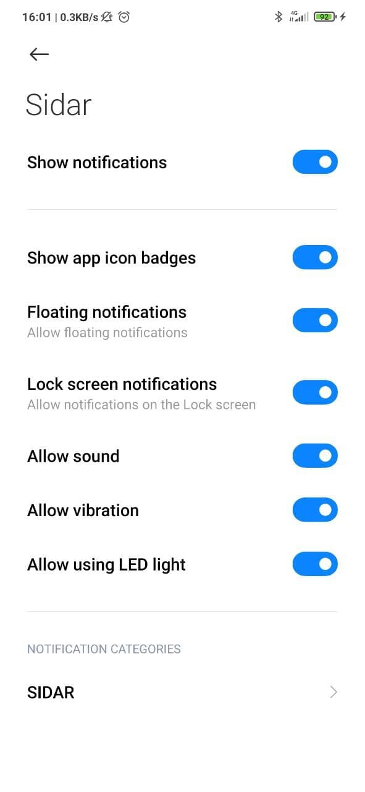 |
| Gambar (kiri) merupakan popup permintaan akses dari aplikasi untuk memberikan anda fitur notifikasi atau reminder yang telah disediakan oleh aplikasi SIDAR, gambar (kanan) merupakan setting akses android yang akan muncul ketika anda bersedia memberikan akses. Gambar (atas) merupakan popup permintaan akses dari aplikasi untuk memberikan anda fitur notifikasi atau reminder yang telah disediakan oleh aplikasi SIDAR, gambar (bawah) merupakan setting akses android yang akan muncul ketika anda bersedia memberikan akses. |
2. Halaman Login |
| Setelah Masuk ke halaman login maka akan muncul tampilan halaman login seperti pada gambar dibawah. |
| 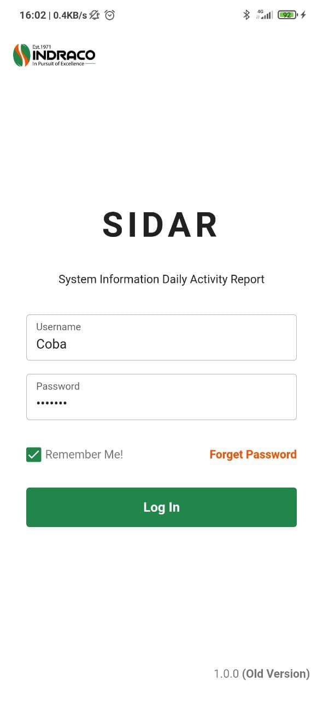 |
|
Masukan username dan password anda untuk masuk ke sidar, lalu tekan tombol [Log In] untuk masuk menggunakan akun tersebut. Terdapat dua cara untuk masuk menggunakan akun, yaitu dengan cara sekali masuk tanpa menyimpan informasi akun anda di aplikasi; gambar (kiri), dan cara satunya masuk dengan menyimpan informasi akun anda di aplikasi; gambar (kanan). Saat anda masuk dengan menyimpan informasi akun anda di aplikasi, maka kali kedua dan seterusnya anda membuka aplikasi, sistem Sidar otomatis akan mengenali anda dan membawa anda ke halaman [Dashboard]. Masukan username dan password anda untuk masuk ke sidar, lalu tekan tombol [Log In] untuk masuk menggunakan akun tersebut. Terdapat dua cara untuk masuk menggunakan akun, yaitu dengan cara sekali masuk tanpa menyimpan informasi akun anda di aplikasi; gambar (atas), dan cara satunya masuk dengan menyimpan informasi akun anda di aplikasi; gambar (bawah). Saat anda masuk dengan menyimpan informasi akun anda di aplikasi, maka kali kedua dan seterusnya anda membuka aplikasi, sistem Sidar otomatis akan mengenali anda dan membawa anda ke halaman [Dashboard]. |
3. Halaman Dashboard |
|
Pada halaman [Dashboard] terdapat 3 tampilan grafik yang menunjukan performa setiap user. Today Report menampilkan pengiriman laporan hari ini; Performance by Day menampilkan performa laporan pada tiap harinya dalam waktu satu minggu; Performance by Month menampilkan performa laporan pada tiap harinya dalam waktu satu bulan. |
| 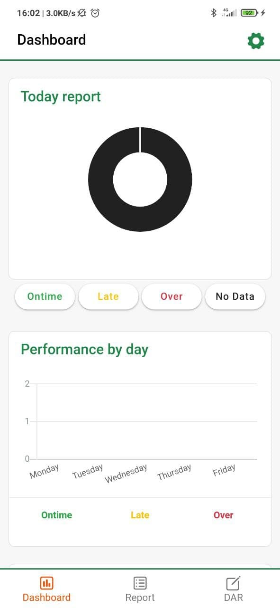 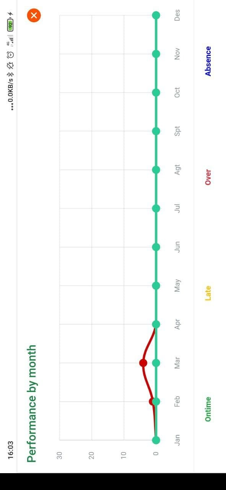 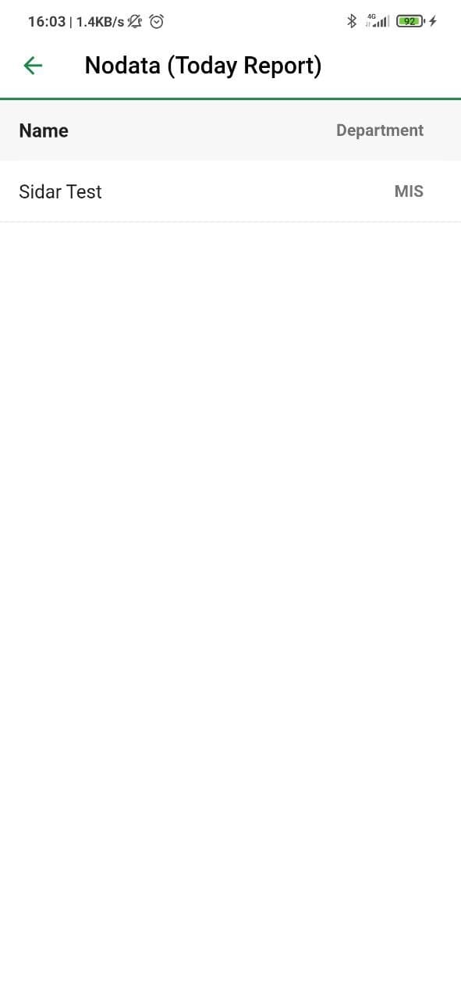 |
|
Untuk melihat daftar Today Report bisa dilakukan dengan menekan tombol [Ontime] [Late] [Over] [No Data] yang terdapat di bawah grafik Today Report, maka akan muncul tampilan siapa saja user yang ada pada status laporan tersebut, gambar (bawah). Sedangkan untuk menampilkan grafik secara penuh dengan cara mengetuk pada grafik satu kali, gambar (atas kanan) merupakan tampilan ketika grafik Performance by Month yang ditampilkan secara penuh. Catatan : Untuk grafik Performance by Day dan grafik Performance by Month, rotasi smartphone akan otomatis dirubah oleh Sidar untuk memberikan informasi secara maksimal. Untuk melihat daftar Today Report bisa dilakukan dengan menekan tombol [Ontime] [Late] [Over] [No Data] yang terdapat di bawah grafik Today Report, maka akan muncul tampilan siapa saja user yang ada pada status laporan tersebut, gambar (no. 3). Sedangkan untuk menampilkan grafik secara penuh dengan cara mengetuk pada grafik satu kali, gambar (no. 2) merupakan tampilan ketika grafik Performance by Month yang ditampilkan secara penuh. Catatan : Untuk grafik Performance by Day dan grafik Performance by Month, rotasi smartphone akan otomatis dirubah oleh Sidar untuk memberikan informasi secara maksimal. |
4. Halaman Report |
| Ketika anda beralih ke halaman [Report] Sidar otomatis akan menampilkan daftar laporan pada akun anda, tampilan pada halaman [Report] akan tampil sesuai dengan gambar dibawah. |
| 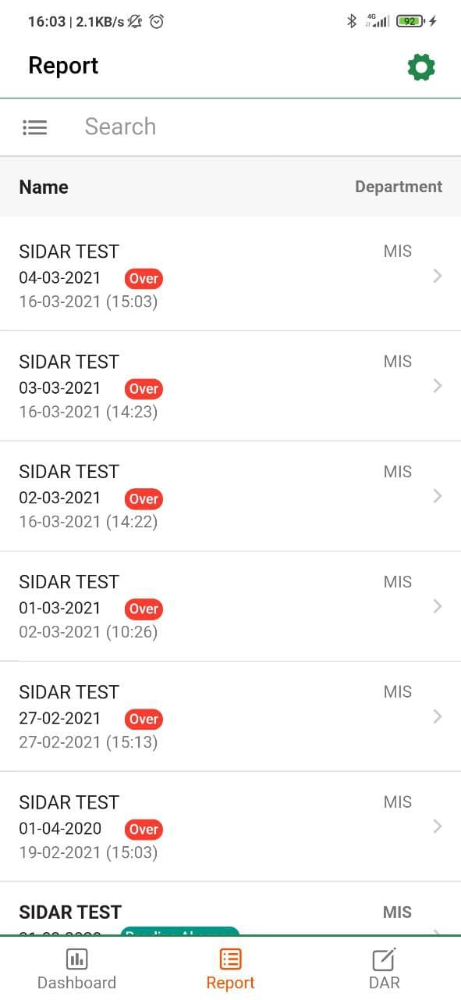 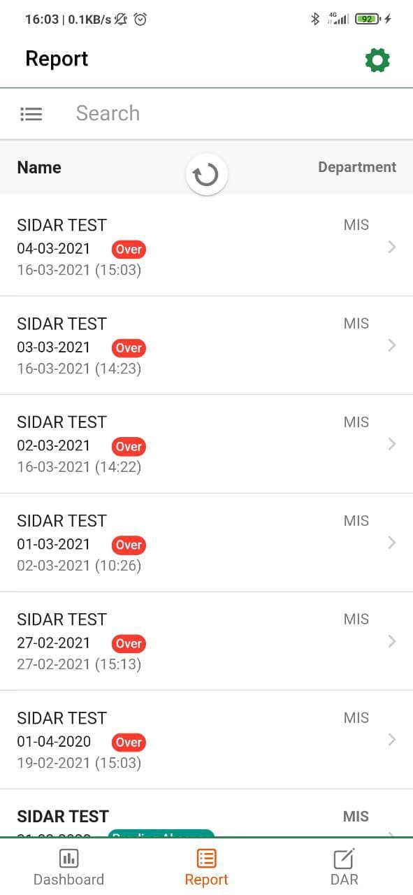 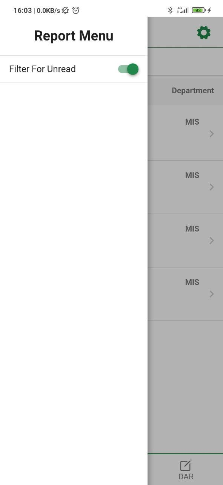 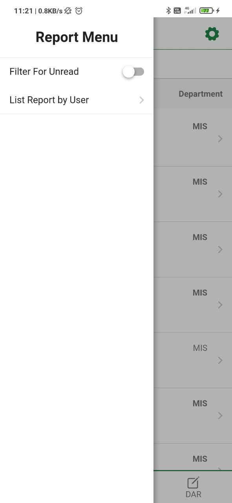 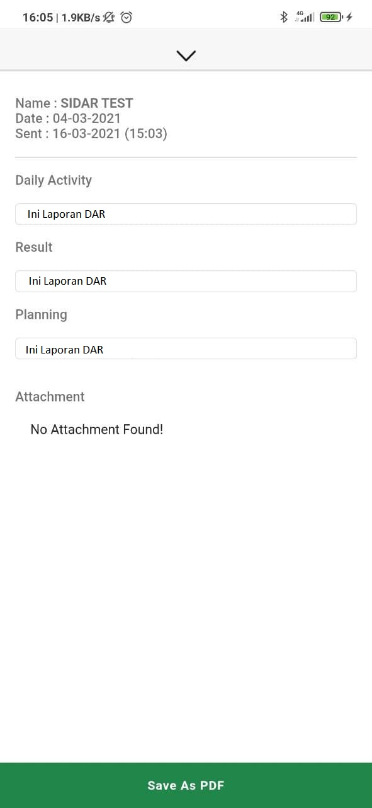 |
|
Anda bisa melihat detail laporan yang ada pada daftar laporan dengan menekan satu kali pada laporan yang ingin anda lihat detailnya.
Anda juga bisa mencari laporan yang ingin anda cari dengan cara mengetiknya pada input [Search], dan anda juga bisa menggunakan Filter untuk laporan yang belum anda baca pada submenu report yang ditunjukkan pada gambar (tengah kiri dan tengah kanan). Gambar (bawah) merupakan tampilan dari detail laporan yang anda buka, laporan tersebut juga bisa di simpan dengan menekan tombol [Save as PDF] di bagian paling bawah tampilan detail laporan. Untuk merefresh daftar laporan yang ada anda bisa melakukannya dengan cara menarik kebawah daftar laporan tersebut kemudian melepaskannya, tampil seperti pada gambar (atas kanan). Anda bisa melihat detail laporan yang ada pada daftar laporan dengan menekan satu kali pada laporan yang ingin anda lihat detailnya. Anda juga bisa mencari laporan yang ingin anda cari dengan cara mengetiknya pada input [Search], dan anda juga bisa menggunakan Filter untuk laporan yang belum anda baca pada submenu report yang ditunjukkan pada gambar (no. 3 dan 4). Gambar (no. 5) merupakan tampilan dari detail laporan yang anda buka, laporan tersebut juga bisa di simpan dengan menekan tombol [Save as PDF] di bagian paling bawah tampilan detail laporan. Untuk merefresh daftar laporan yang ada anda bisa melakukannya dengan cara menarik kebawah daftar laporan tersebut kemudian melepaskannya, tampil seperti pada gambar (no. 2). |
5. Halaman DAR |
| Pada halaman [DAR] terdapat 3 input yang nantinya bisa anda edit seperti pada gambar dibawah. |
| 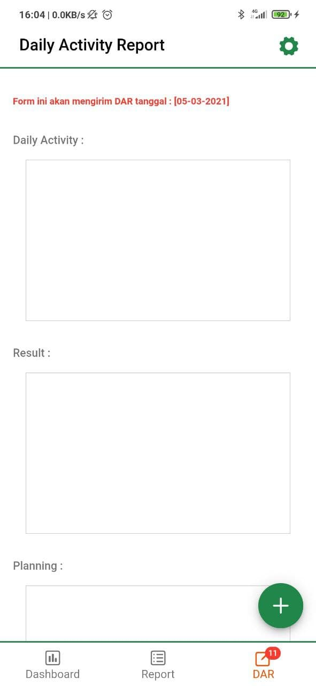 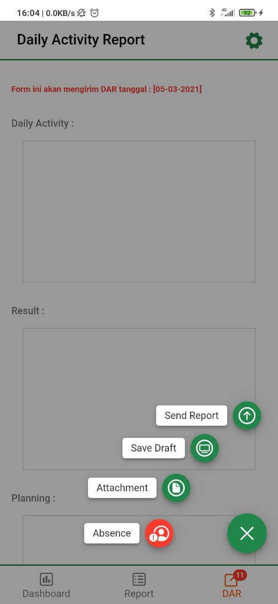 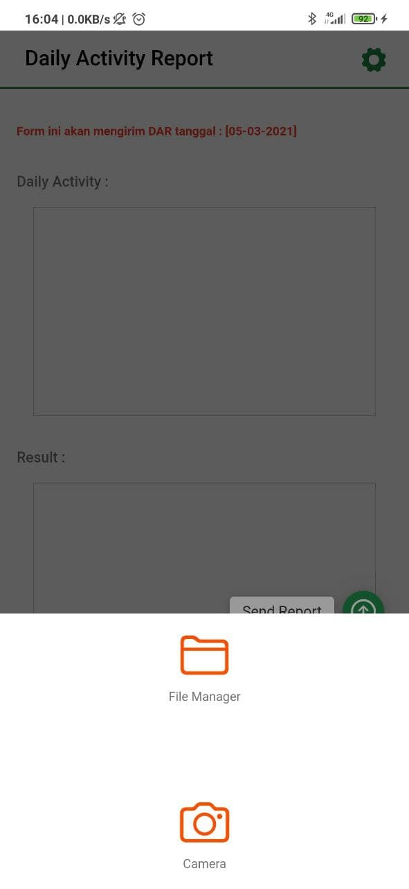 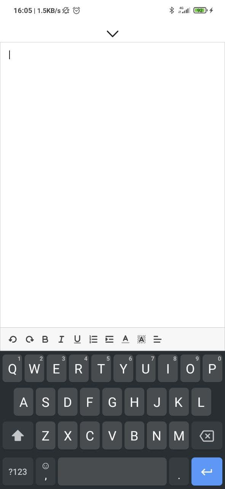 |
|
Ketika pertama kali membuka halaman [DAR] Sidar otomatis akan melakukan pengecekan draft yang anda miliki di Sidar versi web, jika terdapat draft maka Sidar akan mengisinya secara otomatis ke aplikasi.
Kapanpun anda mau mengedit isi laporan, bisa anda lakukan dengan menekan editor, seketika itu juga Sidar akan menampilkan editor dengan ukuran penuh seperti pada gambar (bawah kanan). Saat anda ingin melampirkan file berupa dokumen atau foto dari kamera atau galeri yang ditunjukkan pada gambar (bawah kiri), anda bisa menekan tombol [+] yang ada di bagian kanan bawah, maka akan muncul tampilan seperti pada gambar (atas kanan), selain melampirkan file anda juga bisa menyimpan laporan anda secara offline; absen; dan mengirim dar dari tombol ini. Ketika pertama kali membuka halaman [DAR] Sidar otomatis akan melakukan pengecekan draft yang anda miliki di Sidar versi web, jika terdapat draft maka Sidar akan mengisinya secara otomatis ke aplikasi. Kapanpun anda mau mengedit isi laporan, bisa anda lakukan dengan menekan editor, seketika itu juga Sidar akan menampilkan editor dengan ukuran penuh seperti pada gambar (no. 4). Saat anda ingin melampirkan file berupa dokumen atau foto dari kamera atau galeri yang ditunjukkan pada gambar (no. 3), anda bisa menekan tombol [+] yang ada di bagian kanan bawah, maka akan muncul tampilan seperti pada gambar (no. 2), selain melampirkan file anda juga bisa menyimpan laporan anda secara offline; absen; dan mengirim dar dari tombol ini. |
6. Dokumentasi Lainnya |
| Dokumentasi ini sebagai pelengkap dari dokumentasi-dokumentasi diatas. |
| 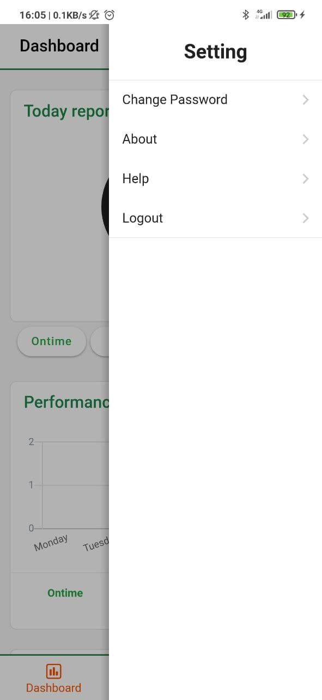 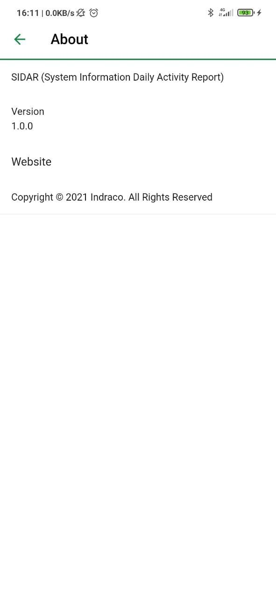 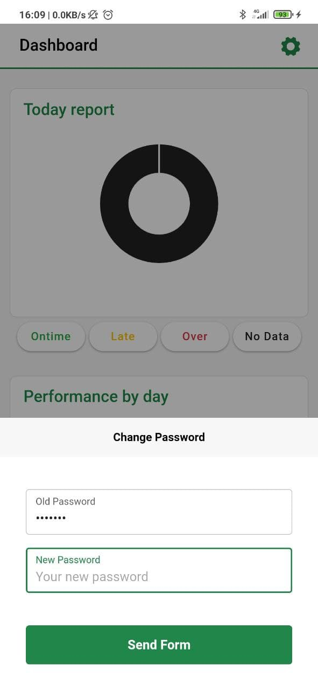 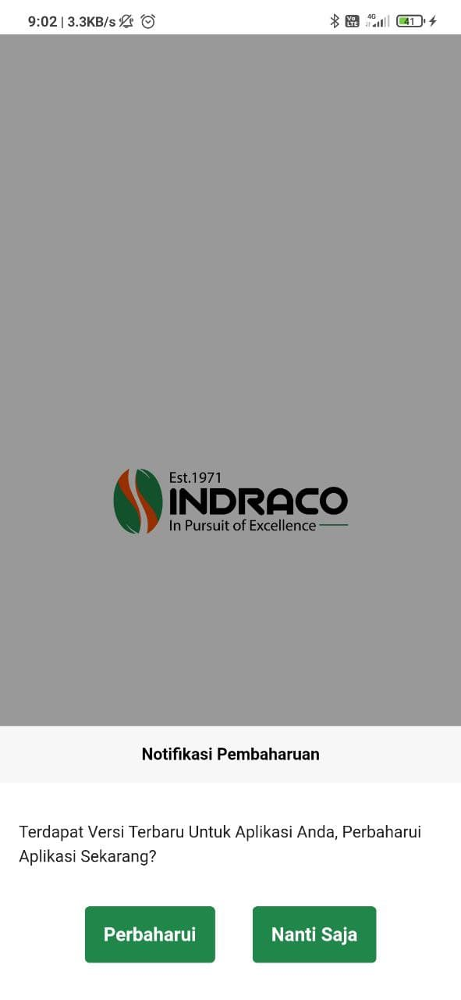 |
|
Gambar (atas kiri) menampilkan menu setting yang bisa anda akses jika menekan icon gerigi hijau pada pojok kanan atas layar, atau melakukan swipe dari kanan ke kiri pada tampilan layar.
Gambar (atas kanan) merupakan tampilan dari halaman about, yang memuat informasi mengenai versi aplikasi dan halaman versi web Sidar. Gambar (bawah kiri) merupakan tampilan dari popup [Change Password], yang memungkinkan anda untuk merubah password anda dengan password yang baru. Gambar (bawah kanan) merupakan tampilan awal ketika anda membuka aplikasi dan terdapat aplikasi Sidar dengan versi terbaru di Playstore. Gambar (no. 1) menampilkan menu setting yang bisa anda akses jika menekan icon gerigi hijau pada pojok kanan atas layar, atau melakukan swipe dari kanan ke kiri pada tampilan layar. Gambar (no. 2) merupakan tampilan dari halaman about, yang memuat informasi mengenai versi aplikasi dan halaman versi web Sidar. Gambar (no. 3) merupakan tampilan dari popup [Change Password], yang memungkinkan anda untuk merubah password anda dengan password yang baru. Gambar (no. 4) merupakan tampilan awal ketika anda membuka aplikasi dan terdapat aplikasi Sidar dengan versi terbaru di Playstore. |